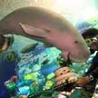
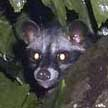

Dugong
Dugong dugon |
|
|
|
|
| 2.4-2.7m
long. Large snout, downward facing mouth, no dorsal fin, powerful
tail fluke. Rarely seen. |
1.2-2.8m
long. Long narrow jaws, dorsal fin, powerful tail fluke. Sometimes
seen in the waters off our Southern Islands. |
|
Head
and body to 75cm, tail to 45cm. Short sleek fu, short limbs with webbed
'fingers' and prominent claws. Upperparts greyish brown, underside
buffy. Mangroves, rocky shores, coastal areas. Commonly seen at Sungei
Buloh, sometimes in other coastal habitats. |
Head
and body 1.5-2m, up to 200kg. Bristly hairs with a mane on the neck
and back. They can swim. Commonly seen. Forested areas, shores. Commonly
seen in our forests, wild places, coastal forests and offshore islands
like Pulau Ubin and Pulau Tekong. |
| |
|
|
|
|
|
|

Civet cat
Paradoxurus
hermaphroditus |
|
|
|
| Head
and body to 45cm, tail to 56cm. Soft silky fur olive brown above and
paler below. Face greyish with prominent white eyelids. Commonly seen
in our forests, wild places, coastal forests and some offshore islands.
|
Head
and body to 59cm, tail to 53cm. Long sleek body, short limbs, long
tail. Body dark greyish brown with three fine, broken black stripes
along the back and black spots on the sides. A black 'mask' across
a pale face. In trees and high places, forests and urban gardens.
More active at night. Commonly seen. |
Head
and body to 22cm, tail to 21cm. Olive-brown, belly reddish brown,
with a black and white stripe on the sides. Commonly seen in trees
in our wild places. |
Forearm
length about 6.5cm. White wing bones and white ear edges. Long muzzle
with prominent tubular nostrils. Active at night. Commonly seen in
many of our wild places. |
Forearm
length about 8cm. Upperside is blackish brown with white markings,
underside white. Wings distinctly white. Rarely seen. |